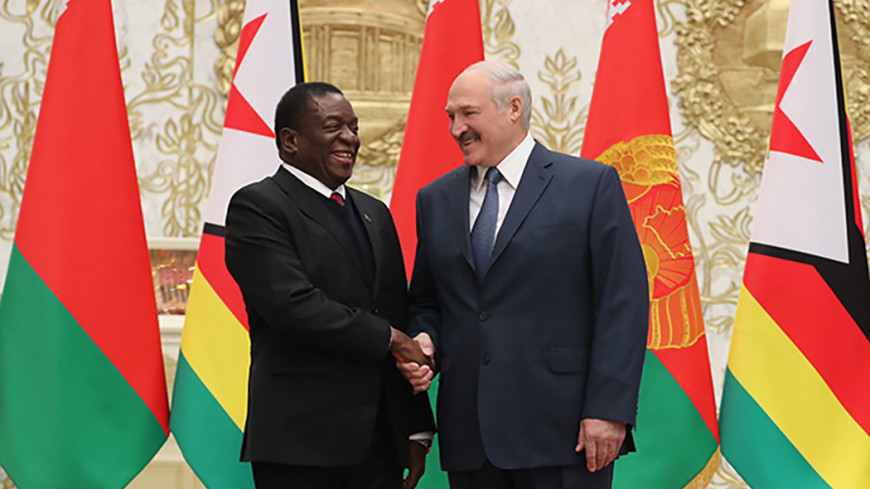

Winston Churchill once famously quipped that “Russia is a riddle wrapped in a mystery inside an enigma”. A keen observer will notice that Alyaksandar Lukashenka’s Belarus is much the same. All too often, Western analysts have made the mistake of grossly oversimplifying Belarus’ relationship with Russia, as well as its domestic political affairs and broader foreign policy. This has led the West to neglect relations with Minsk, where despite a less than ideal government, great strategic opportunity lies, and where there is also significant strategic risk. The reality is this: Lukashenka is not simply Putin’s puppet in Minsk. He is concerned for his own nation’s sovereignty, and walks a thin tightrope in his relations with both Moscow and the West. Like him or not, there is no viable alternative to Lukashenka, and NATO needs a sovereign and neutral Belarus on the Baltics’ southeastern flank.
Russia and Belarus have had extensive disagreements on economic matters. While Russia has largely been the economic lifeline for Minsk, and while Minsk has enjoyed huge subsidies on Russian gas, the special relationship between the two has largely gone sour. Arguments over energy prices, much of which center around the purported “oil tax maneuver,” in which Russia will reduce its “dotations” on Belarusian oil by lowering export duties while taxing resource extraction. This is estimated to result in critical losses to the Belarusian energy sector and will likely put significant strain on Belarus’ already weak economy. Likewise, Russia and Belarus have had major disagreements about the latter’s role in the Russian led Commonwealth of Independent States (CIS) and Eurasian Economic Union (EEU). In response, Lukashenka’s government has been seeking economic ties elsewhere, particularly China, the European Union, and Africa. Earlier this year, Lithuania and Poland were making overtures towards Minsk regarding trade in the energy sector, and Belarusian agricultural products reach E.U. markets regularly. However, a central pillar in Minsk’s future trade relations will most certainly be politics. Lukashenka sees too many political demands from both Russia and the E.U., and will increasingly seek to develop ties with the Chinese and with African nations such as Zimbabwe. Case in point, earlier this year Minsk began work on a deal to trade Belarusian heavy machinery for Zimbabwean diamonds and precious metals.
 President Lukashenka meets with Zimbabwean President Emmerson Mnangagwa, January 2019. Photo credit: president.gov.by
Belarus’ relations with the West are just as complicated. Lukashenka has sought to balance cooperation with Western governments on the Northern Distribution Network during the war in Afghanistan and its role as a neutral mediator between Russia and Ukraine in the Minsk Accords against its staunch refusal to acquiesce to Western demands on democratic governance, human rights, and economic liberalization. From the American side, this has led to the imposition of sanctions on Belarus, along with numerous postponements of sanctions, and the two are only now ending an extended period of frosty diplomatic relations wherein Washington and Minsk did not exchange ambassadors.
In military affairs, Lukashenka’s tightrope becomes even more bizarre. While Russia and Belarus are friendly partners on paper, and while the two have enjoyed extensive military cooperation, notably in Russia’s Zapad (“West”) military exercises, Russia actively threatens Belarusian security. In response to Lukashenka’s gradual “soft-Belarusianization” and stubbornness on economic matters, Moscow has ramped up its campaign of hybrid warfare on Belarus, particularly with regard to disinformation. Further, many hardliners in the Russian political elite have called for a “Krymnash” (“Crimea is ours”) scenario for Belarus, wherein Belarus would be absorbed into the Russian state in much the same manner as Crimea. Even more, Russia has recently increased its troop presence in both Smolensk and Klintsy near the Belarusian border. Smolensk puts the Russians within a straight shot of Minsk by the E30 highway, along which there are few population centers to offer resistance. At Klintsy, the Russians are near the major Belarusian railway hub at Gomel’. This presence certainly increases the pressure on Minsk
For NATO, Belarus is a key strategic point on the Eastern Flank. A sovereign Belarus stands in the way of Russian aggression in the Baltic States. Should the Russians control Belarus, the Suwałki Gap, a narrow strip of land on the border of Lithuania and Poland between Belarus and Kaliningrad, could easily be sealed off, giving the Russians a key logistical advantage while denying land access to the Baltics by NATO reinforcements. Likewise, the current lack of Russian ground troops or air bases in Belarus is a key buffer between Poland, Lithuania, and Russia. By being de facto non-aligned, Belarus provides greater security on the Eastern Flank, allowing for continued NATO access to the Suwałki Gap. The strategic depth Belarus provides is clouded somewhat by its military and economic weakness should Russia decide to violate the former’s sovereignty, and this is precisely why relations with Minsk are taking on greater importance. Much as Western governments do not like the Lukashenka regime, and much as they are right not to, there are no viable alternatives that will maintain stability. The West, therefore, has to accept Lukashenka for who he is and encourage him to keep his country sovereign and neutral.
Cover Photo Credit: kremlin.ru